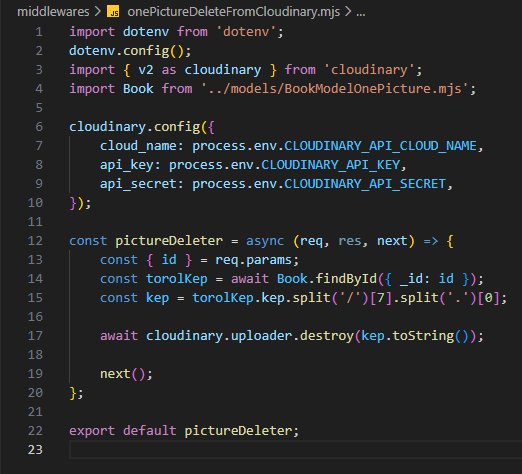

Összes könyv kezelése - onePictureDeleteFromCloudinary.mjs
Összes könyv kezelése - onePictureDeleteFromCloudinary.mjs

Ebben a részben szerkesztjük a middlewares mappában a onePictureDeleteFromCloudinary.mjs állományt, amelyben összekötjük a webszerverünket a Cloudinary felülettel és egy képet törölünk onnan.
-
Szerkesszük a
onePictureDeleteFromCloudinary.mjsállományunkat.-
import dotenv from 'dotenv';- adotenvnpmcsomag beimportálása. -
dotenv.config();- az értékeket a.envállományban keresse abackendmappában. -
import { v2 as cloudinary } from 'cloudinary';- acloudinarynpmcsomag beimportálása, mintv2. -
import Book from '../models/BookModelOnePicture.mjs';- aBookmodell alapértelmezett beimportálása. -
cloudinary.config({...})- aCloudinaryoldalról vett értékek beállítása a.envállományból. -
const pictureDeleter = async (req, res, next) => {...};- apictureDeleterfüggvény létrehozása, amellyel törölhetjük a képet a felhőből. -
const { id } = req.params;- szedjük ki azidtulajdonságot areq.params-ból. -
const torolKep = await Book.findById({ _id: id });- keressük meg a könyvet, amelyhez tartozó képet törölni akarjuk. -
const kep = torolKep.kep.split('/')[7].split('.')[0];- szedjük ki a kép azonosítóját. -
await cloudinary.uploader.destroy(kep.toString());- töröljük a képet aCloudinaryfelületéről. -
next();- lépjünk a következőmiddleware-re. -
export default pictureDeleter;- apictureDeleterfüggvény alapértelmezett kivitele.
-